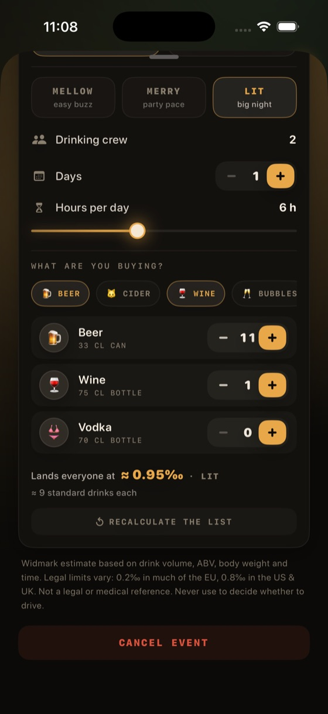
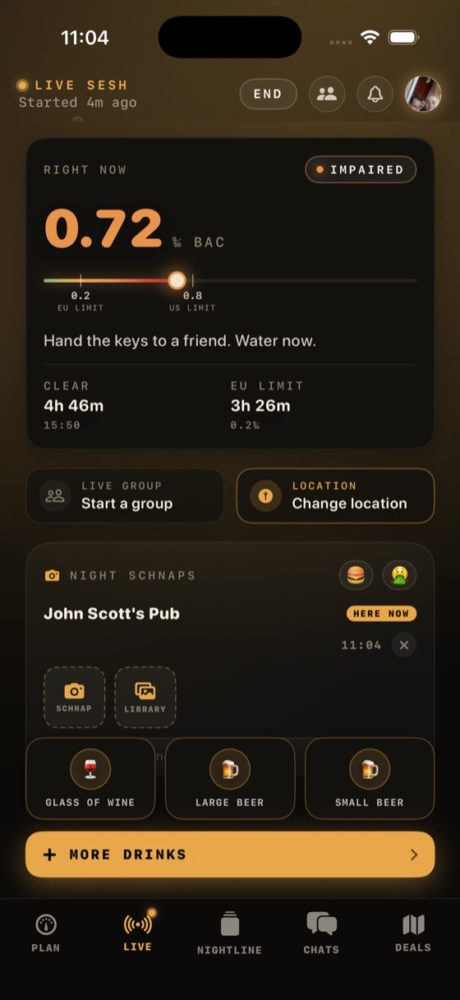
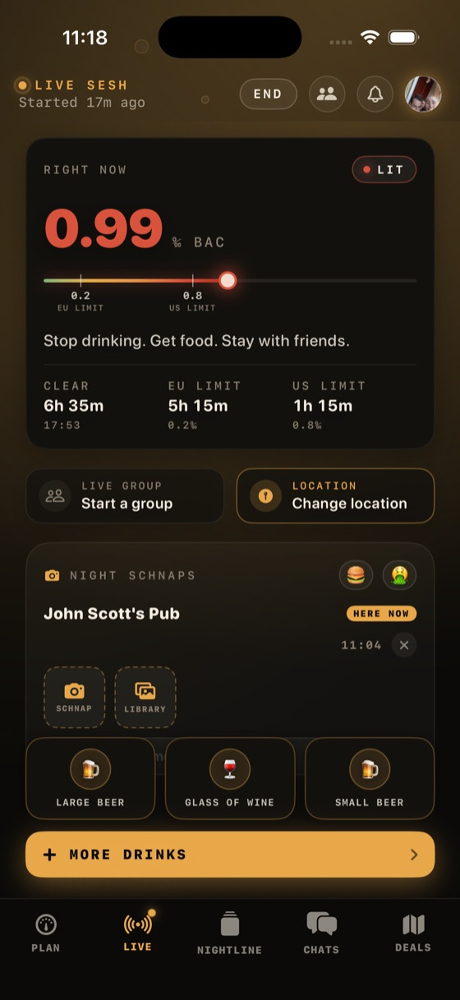
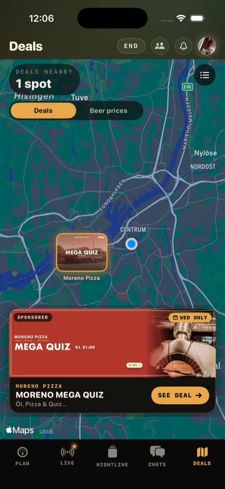
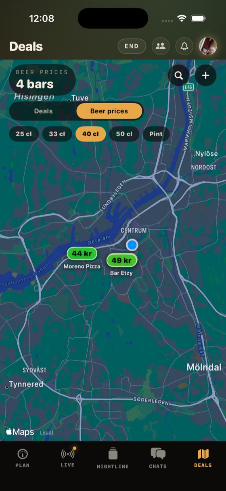

Plan the party
Create a party or a trip, invite the crew, pick the level you're after — and the calculator works out exactly how much to buy, in bottles and cans.
Real screen · from the appLive now in beta
The social BAC tracker. Log your drinks, watch your estimated BAC live, run group sessions with friends, share the night's schnaps, and replay it all in the morning.
TESTFLIGHT BETA · iOS 18+
Scroll to pour
The app
PLAN, LIVE, NIGHTLINE, CHATS and DEALS — in the order a night actually happens, and a recap waiting for you in the morning.

Create a party or a trip, invite the crew, pick the level you're after — and the calculator works out exactly how much to buy, in bottles and cans.
Real screen · from the app

One tap per drink and your estimated BAC climbs in real time — with how long until you're clear, and until you're under the limit. Check in to bars and bring the crew.
Real screens · two taps apartStories and recaps from your friends land here — where they are, how many they've had and where their night is at. React and reply straight from the feed.
Rebuilt to match · real screen has friends in itWhere the plans actually happen. DM friends one-to-one, and replies to your stories land right here in the same thread.
Rebuilt to match · real screen is private

Tonight's specials around you on the map — then flip to beer prices and see what a pint actually costs at each bar, filtered by serving size.
Real screens · deals, then beer pricesPeak BAC, the route you actually walked, every stop with what it did to your number, and who was there — waiting for you in the morning.
Rebuilt to match · real recap has photos in itFind the cheap pint
Zoom out and the whole world is on it. Every price is coloured against what a beer actually costs in that region and that currency — so cheap reads as cheap in Gothenburg, Lisbon or Tokyo, not just wherever the numbers happen to be smallest.
Colour is relative to the local cheapest — same logic, any currency
What beer costs
We publish what a beer actually costs across Sweden — compared per centilitre, not per glass, because a cheap beer in a small glass isn't cheap. Updated from the same reports that feed the map.
Sejdel for bars